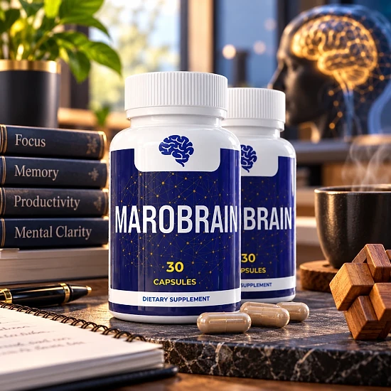
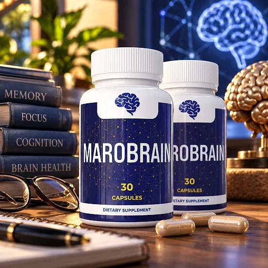
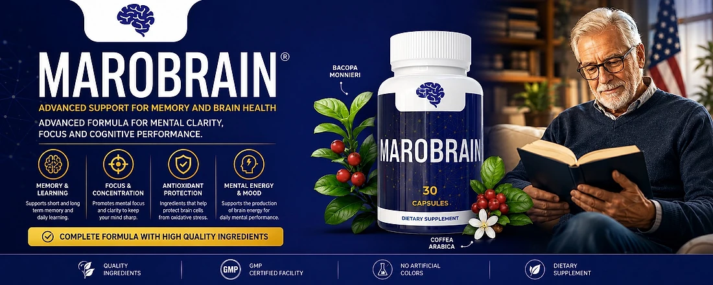

What Is Marobrain And How Does It Work?
Marobrain is a dietary supplement in capsule form created for adults who want to support their memory and brain health. Each bottle contains 30 capsules, and the official order page describes one bottle as roughly a 30-day supply.
The brand presents Marobrain as an advanced formula for mental clarity, focus and cognitive performance. Its official materials organize the formula around four areas: memory and learning, focus and concentration, antioxidant protection, and mental energy and mood.
How is it designed to work? According to the brand, the formula combines plant-based ingredients that may support short and long term memory, help keep the mind sharp during daily tasks, help protect brain cells from oxidative stress, and support the production of brain energy for everyday mental performance.
Two botanicals are highlighted in the official artwork: Bacopa monnieri, an herb with a long history in traditional practices, and Coffea arabica, the coffee plant. The brand calls it a complete formula made with high quality ingredients.
The official materials also mention that Marobrain is made in a GMP certified facility and contains no artificial colors. Orders are processed by BuyGoods, an established online retailer.
Results may vary from person to person, and a supplement works best alongside good sleep, regular activity and a balanced diet. The brand does not promise a specific result or timeline, so it makes sense to give any daily routine a fair period of consistent use before judging how you feel and what to expect.
Marobrain is a dietary supplement and is not intended to diagnose, treat, cure, or prevent any disease.
Marobrain Ingredients
The official website does not publish the full Supplement Facts panel, but the brand's own artwork names two key ingredients:
Bacopa Monnieri: a traditional herb that is one of the most studied botanicals in memory and learning formulas.
Coffea Arabica: the coffee plant, commonly used in focus formulas and a natural source of caffeine.
The brand describes the rest of the blend only in general terms, as high quality ingredients chosen to support memory, focus, antioxidant protection and mental energy. Because the exact amounts are not shown on the website, it is not possible to compare the doses with those used in published research.
The descriptions above reflect how these ingredients are generally known, not proven results. Before you start, read the full label on the bottle you receive, check it for anything you are sensitive to, and show it to your healthcare provider if you take other supplements. If something on the label is unclear, the support team can be reached by email or phone.
Marobrain Side Effects
The official website does not list specific side effects for Marobrain. Even so, a few points are worth knowing before you start, especially because the full label is not shown online.
The formula features Coffea arabica, the coffee plant, so it may contain caffeine. People who are sensitive to caffeine may notice restlessness, a faster heartbeat or trouble sleeping, and should keep an eye on how much coffee, tea or energy drinks they have during the day. Taking the capsule earlier in the day may help.
Bacopa monnieri is generally well tolerated, but some people report mild stomach upset, especially on an empty stomach. It may also interact with certain medications, including thyroid and sedative drugs.
As with any supplement, consult your doctor before use if you are pregnant or nursing, take medication, or have a medical condition, including heart or blood pressure concerns. The product is meant for adults. Stop using it and seek medical advice if you notice any unusual reaction, and bring the label to your appointment. Because the full ingredient list is not published online, reading the bottle carefully on arrival is the safest first step.
Marobrain Dosage
The official website does not publish detailed directions, so the label on your bottle is the reference to follow. Each bottle holds 30 capsules, and the order page describes one bottle as about a 30-day supply, which points to a simple routine of one capsule per day.
Many people find it easier to remember a supplement when they take it at the same time every day, for example with breakfast and a full glass of water. Because the formula features the coffee plant, taking it in the morning or early afternoon may be a sensible choice for people who are sensitive to caffeine.
Do not take more than the label recommends. Taking extra capsules will not speed up results and may increase the chance of unwanted effects.
Supplements for memory and focus are usually used for several weeks before people judge how they feel, and results vary from person to person. Marobrain is best seen as one part of a brain-friendly routine that includes good sleep, regular activity, balanced meals and mental challenges. If you take medication or have a medical condition, check with your healthcare provider first.
Marobrain – Refund Policy
According to the official website, Marobrain is covered by a 60-Day Money-Back Guarantee. The terms state that you have 60 days from the date of purchase to request a full refund.
Step 1 – Contact support: email support@marobrain.com or call the phone line shown on the official contact page, and include the email address you used and/or your order number.
Step 2 – Return the product if asked: the shipping policy explains that refused or returned packages are refunded only after they arrive back at the warehouse and are reviewed, so send any return with a valid tracking number and share that number with support. Shipping and handling on refused packages is deducted from the refund.
Step 3 – Receive your refund: the refund is credited back to the original payment method and may take up to 3-5 business days to show on your statement, depending on your bank.
The shipping policy also says an order can be cancelled only within 24 hours of purchase. Orders are processed by BuyGoods, so keep your order confirmation email, and note your purchase date so you stay within the 60-day window. Keeping the bottles and original packaging until you decide is also wise.
Marobrain – Where To Buy
Marobrain is sold through its official website, with orders completed through a secure checkout from BuyGoods, an established online retailer. According to the shipping policy, orders are processed in 1-2 business days and sent mainly through UPS.
Bottles listed by unknown third-party sellers may look the same, but there is no way to verify their origin or how they were stored, which raises real concerns about quality and safety. Purchases made outside the official source may not be covered by the 60-Day Money-Back Guarantee.
That is why most buyers prefer to order Marobrain directly from the official website. Going to the source means receiving the authentic original product, with access to the support team and the full guarantee.
Before completing your order, make sure you are on the official Marobrain website to avoid counterfeit products. Checking the web address in your browser before you pay takes only a moment and helps protect your order.
To ensure you’re getting the authentic product, most users choose to visit the official website.
Is Marobrain A Scam?
Based on the official website, Marobrain appears to be a real dietary supplement, sold through BuyGoods, an established retailer, and backed by a written refund policy.
Several points speak in its favor: there is a support email and phone line, a 60-day money-back guarantee, a detailed shipping policy that explains processing, cancellation and returns, and the brand states that the product is made in a GMP certified facility with no artificial colors.
There are also points to keep in mind. The official website does not publish the full Supplement Facts panel, so the exact ingredients and amounts beyond Bacopa monnieri and Coffea arabica are not shown online. The site also publishes no customer reviews or testimonials. The brand's descriptions of memory, focus and mental energy support are its own claims, and results vary from person to person. Shoppers should keep these limits in mind when comparing it with other options.
For adults looking for a simple daily capsule for memory and brain health, Marobrain may be worth considering, ideally ordered from the official website, with the label checked on arrival and discussed with a doctor by anyone who takes medication or is sensitive to caffeine.
For those who want to verify product details or check current availability, the official Marobrain website remains the safest option.

Check Availability On Official Website
